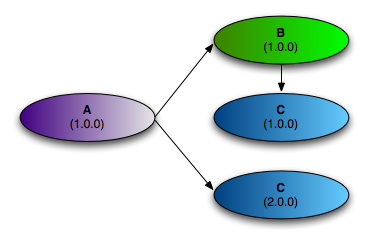

The Virgo Web Server offers several choices when it comes to deploying applications. Each choice offers certain advantages, and it is important to understand those in order to make the right choice for your application. In this chapter, we take a closer look at the choices offered, compare them, and provide guidelines in choosing the right one based on your specific needs.
The VWS supports standard self-contained WAR files thus allowing you to use the Virgo Web Server as an enhanced web server. The VWS also supports the Shared Libraries WAR format which allows for slimmer WAR files that depend on OSGi bundles instead of including JAR files inside the WAR. The Shared Services WAR format allows developers to further reduce the complexity of standard WARs by deploying services and infrastructure bundles alongside the WAR. A shared services WAR will then consume the services published by those bundles. To complete the picture, the VWS supports the new OSGi-standard Web Bundle deployment format for web applications that builds on the benefits provided by a shared services WAR. In addition to this VWS provides additional conveniences for developing and deploying Spring MVC-based web applications.
For applications consisting of multiple bundles and web applications, plans and the PAR format are the primary deployment models that take advantage of OSGi capabilities. We will explore all of these formats and their suitability later in this guide.
The Virgo Web Server supports applications packaged in the following formats:
When you deploy an application to the VWS, each deployment artifact (e.g., a single bundle, WAR, PAR, or plan) passes through a deployment pipeline. This deployment pipeline supports the notion of personality-specific deployers which are responsible for processing an application with a certain personality (i.e., application type). The 2.1.0.M03-incubation release of the VWS natively supports personality-specific deployers analogous to each of the aforementioned packaging options. Furthermore, the deployment pipeline can be extended with additional personality deployers, and future releases of the VWS will provide support for personalities such as Batch, Web Services, etc.
Let’s take a closer look now at each of the supported deployment and packaging options to explore which one is best suited for your applications.
At its core, the Virgo Web Server is an OSGi container. Thus any OSGi-compliant bundle can be deployed directly on the VWS unmodified. You’ll typically deploy an application as a single bundle or a set of stand-alone bundles if you’d like to publish or consume services globally within the container via the OSGi Service Registry.
For Web Application Archives (WAR), the Virgo Web Server provides support for the following three formats.
Each of these formats plays a distinct role in the incremental migration path from a standard Java EE WAR to an OSGi-ified web application.
Standard WAR files are supported directly in the VWS. At deployment time, the WAR file is transformed into an OSGi bundle and installed into Tomcat. All the standard WAR contracts are honored, and your existing WAR files should just drop in and deploy without change. Support for standard, unmodified WAR files allows you to try out the Virgo Web Server on your existing web applications and then gradually migrate toward the Shared Libraries WAR and Shared Services WAR formats.
In addition to the standard support for WARs that you would expect from Tomcat, the VWS also enables the following features:
Spring-driven load-time weaving (see Section 6.8.4, “Load-time weaving with AspectJ in the Spring Framework").
Diagnostic information such as FFDC (first failure data capture)
The main benefit of this application style is familiarity -- everyone knows how to create a WAR file! You can take advantage of the VWS’s added feature set without modifying the application. The application can also be deployed on other Servlet containers or Java EE application servers.
You may choose this application style if the application is fairly simple and small. You may also prefer this style even for large and complex applications as a starting point and migrate to the other styles over time as discussed in Chapter 5, Migrating to OSGi .
If you have experience with developing and packaging web applications using the standard WAR format, you’re
certainly familiar with the pains of library bloat. So, unless you’re installing shared libraries in a common
library folder for your Servlet container, you have to pack all JARs required by your web application in
/WEB-INF/lib.
Prior to the release of the Virgo Web Server, such library bloat has essentially been the norm for web applications, but
now there is a better solution! The Shared Libraries WAR format reduces your application’s deployment footprint and
eradicates library bloat by allowing you to declare dependencies on libraries via standard OSGi manifest headers
such as
Import-Package
and
Require-Bundle
. The VWS provides additional support for simplifying dependency management via the
Import-Library
and
Import-Bundle
manifest headers which are essentially macros that get expanded into OSGi-compliant
Import-Package
statements.
![[Tip]](images/tip.gif) | Tip |
|---|---|
For detailed information on which libraries are already available, check out the SpringSource Enterprise Bundle Repository . |
Once you’ve begun taking advantage of declarative dependency management with a Shared Libraries WAR, you’ll likely
find yourself wanting to take the next step toward reaping further benefits of an OSGi container: sharing services
between your OSGi-compliant bundles and your web applications. By building on the power and simplicity of
Spring-DM, the
Shared Services WAR
format puts the OSGi Service Registry at your finger tips. As a best practice you’ll typically publish services
from your domain, service, and infrastructure bundles via
<osgi:service ... />
and then consume them in your web application’s ApplicationContext via
<osgi:reference ... />.
Doing so promotes programming to interfaces and allows you to completely decouple your web-specific deployment
artifacts from your domain model, service layer, etc., and that’s certainly a step in the right direction. Of the
three supported WAR deployment formats, the Shared Services WAR is by far the most attractive in terms of
modularity and reduced overall footprint of your web applications.
Virgo Web Server fully supports the OSGi Web Container (RFC66) standard. In fact, the reference implementation for RFC66 was developed by SpringSource from an offshoot of the original VWS codebase. This RI is now fully integrated in VWS as the basis of the support for web application deployment.
The Web Container specification introduces the concept of a web bundle, which is a WAR that is also a bundle. The specification defines how WAR files are transformed into bundles automatically as needed.
The Web Container specification is not yet publicly available, but you can find an introduction to the Web Container in blog entries written by the VWS team here and here.
Virgo Web Server provides a variety of extensions to the Web Container that allow you to construct sophisticated applications. The table below, summarizes the extensions that are available or in development.
Table 3.1.
| Feature | Description | Notes |
|---|---|---|
| Auto-import of system packages | All packages exported by the system bundle are automatically imported by web bundles | This feature is being discussed for inclusion in the specification |
| Instrumentable ClassLoaders | All web bundle ClassLoaders are instrumentable by Spring’s load-time weaving infrastructure. | |
| Support for exploded bundles/WARs | Bundles/WARs in directory form can be deployed as web bundles | |
| Support for scanning TLDs in dependencies | As per the Web Container specification, all TLDs located inside a web bundle are located using the rules defined in the JSP 2.1 specification. In VWS, the dependencies of a web bundle are also scanned for TLDs following the rules outlined in JSP 2.1 |
Web Modules have been removed in favor of war files and web bundles following the OSGi Web Container specification. We believe our users will benefit more from a standard model than one that is VWS-specific.
A PAR is a standard JAR which contains all of the modules of your application (e.g., service, domain, and infrastructure bundles as well as a WAR or web module for web applications) in a single deployment unit. This allows you to deploy, refresh, and undeploy your entire application as a single entity. If you are familiar with Java EE, it is worth noting that a PAR can be considered a replacement for an EAR (Enterprise Archive) within the context of an OSGi container. As an added bonus, modules within a PAR can be refreshed independently and on-the-fly, for example via the Virgo Web Server Tool Suite (see Chapter 7, Tooling).
Many of the benefits of the PAR format are due to the underlying OSGi infrastructure, including:
Fundamentally modularized applications: instead of relying on fuzzy boundaries between logical modules in a monolithic application, this style promotes physically separated modules in the form of OSGi bundles. Then each module may be developed separately, promoting parallel development and loose coupling.
Robust versioning of various modules: the versioning capability offered by OSGi is much more comprehensive than any alternatives. Each module can specify a version range for each of its dependencies. Bundles are isolated from each other in such a way that multiple versions of a bundle may be used simultaneously in an application.
Improved serviceability: each bundle may be deployed or undeployed in a running application. This allows modifying the existing application to fix bugs, improve performance, and even to add new features without having to restart the application.
Furthermore, PARs scope the modules of your application within the VWS. Scoping provides both a physical and logical application boundary, effectively shielding the internals of your application from other PARs deployed within the VWS. This means your application doesn’t have to worry about clashing with other running applications (e.g., in the OSGi Service Registry). You get support for load-time weaving, classpath scanning, context class loading, etc., and the VWS does the heavy lifting for you to make all this work seamlessly in an OSGi environment. If you want to take full advantage of all that the Virgo Web Server and OSGi have to offer, packaging and deploying your applications as a PAR is a good choice, although plans are an even better one, as described in the next section.
| OSGi != multiple JARs |
|---|---|
Note that while physically separated modules can, in theory, be implemented simply using multiple JARs, complex versioning requirements often make this impractical. For example, consider the situation depicted in the diagram below.
Suppose that versions 1.0.0 and 2.0.0 of bundle C are neither backward nor forward compatible. Traditional monolithic applications cannot handle such situations: either bundle A or bundle B would need reworking which undermines truly independent development. OSGi’s versioning scheme enables this scenario to be implemented in a robust manner. If it is desirable to rework the application to share a single version of C, then this can be planned in and is not forced.  |
A plan is similar to a PAR in that it encapsulates all of the artifacts of your application in a single deployment unit. The main difference, however, is that a plan is simply an XML file that lists the artifacts of your application; a PAR, by contrast, is an actual JAR file that physically contains the artifacts. Just like a PAR, you deploy, refresh, and undeploy a plan as a single entity. We highly recommends the use of plans for creating applications.
When you create a plan, you can specify that the included bundles and services are in a scope that isolates them from the rest of Virgo Web Server and its deployments. This scoping ensures that the bundles wire to each other and see each other’s services in preference to services from outside the scope. Scoping also prevents application code from leaking into the global scope or scope of another application. In addition, a plan can link the lifecycle of a group of bundles together atomically, which ensures that install, start, stop, and uninstall events on a single artifact in the plan are escalated to all artifacts in the plan. You can, however, disable both of these features by simply updating an attribute in the plan.
The general benefits of using plans are similar to those of using PARs; see PAR for details. Plans offer added benefits, however, such as the ability to control the deployment order of your application: the order in which you list artifacts in the plan’s XML file is the order in which VWS deploys them. Additionally, because plans specify the artifacts that make up an application by reference, it is easier to share content between plans as well as update individual parts of a plan without having to physically repackage (re-JAR) it.